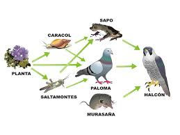

¿QUE ES?
Una cadena alimenticia es una representación simplificada de las relaciones de alimentación entre los organismos de un ecosistema. En sí, una cadena trófica describe el proceso de transferencia de sustancias nutritivas a través de las diferentes especies de una comunidad biológica, en la que cada una se alimenta de la precedente y es alimento de la siguiente.
Niveles de la cadena alimenticia
- Productores (Nivel 1): Son organismos autótrofos, como las plantas y las algas, que capturan energía solar y producen su propio alimento a través de la fotosíntesis. Este es el primer eslabón de la cadena alimenticia.
- Consumidores primarios (Nivel 2): Son los herbívoros, que se alimentan directamente de los productores. Por ejemplo, un conejo que se come hierba o una oruga que come hojas.
- Consumidores terciarios (Nivel 4): Son los carnívoros que se alimentan de otros carnívoros. Un ejemplo sería un águila que caza zorros o serpientes.
- Descomponedores: Aunque a veces no se incluyen directamente en la cadena alimenticia, los descomponedores (como bacterias y hongos) juegan un papel esencial al descomponer la materia orgánica muerta y liberar los nutrientes de vuelta al ecosistema, cerrando el ciclo.

EJEMPLOS:
-Cadena alimenticia en un ecosistema terrestre
1. Planta (productor) → Insecto (herbívoro) → Rana (carnívoro) → Serpiente (depredador)
2. Hierba (productor) → Conejo (herbívoro) → Zorro (carnívoro) → Oso (depredador)
-Cadena alimenticia en un ecosistema acuático
1. Alga (productor) → Pez pequeño (herbívoro) → Pez grande (carnívoro) → Tiburón (depredador)
2. Plancton (productor) → Crustáceo (herbívoro) → Pez (carnívoro) → Ballena (depredador)
-Cadena alimenticia en un ecosistema desértico
1. Cactus (productor) → Insecto (herbívoro) → Lagarto (carnívoro) → Halcón (depredador)
2. Hierba (productor) → Roedor (herbívoro) → Coyote (carnívoro) → León (depredador)
Recuerda que las cadenas alimenticias pueden variar según el ecosistema y la región.